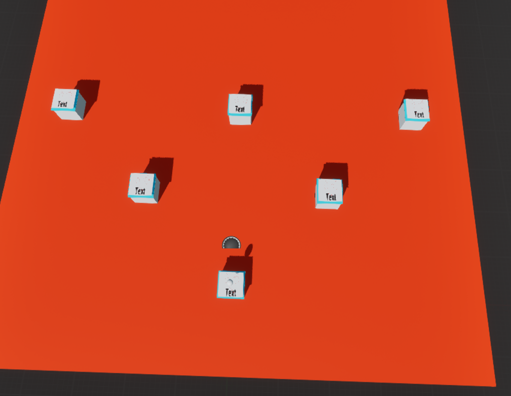
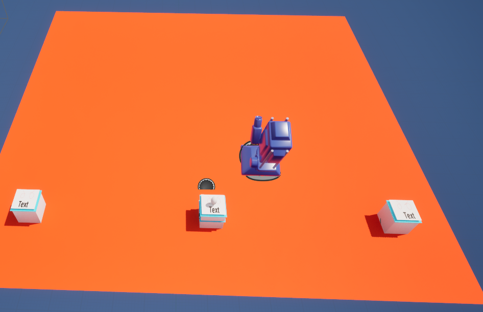
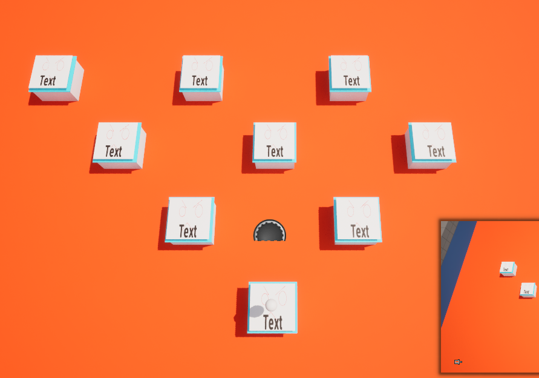
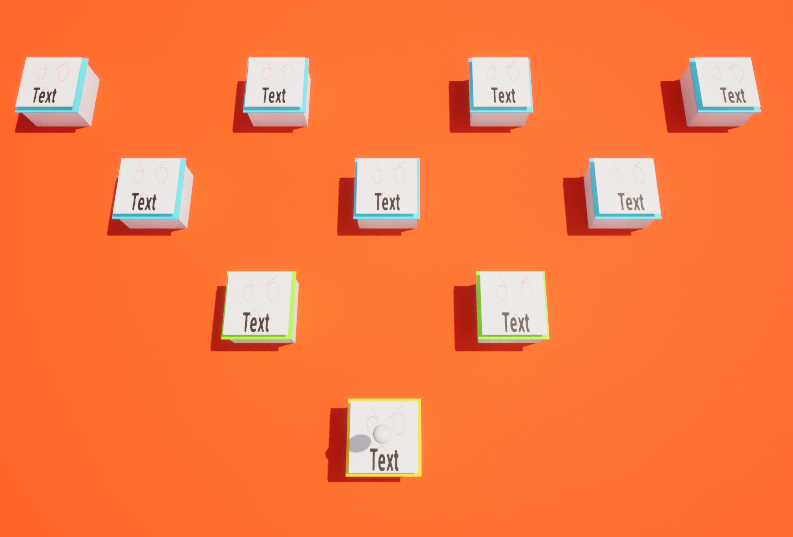
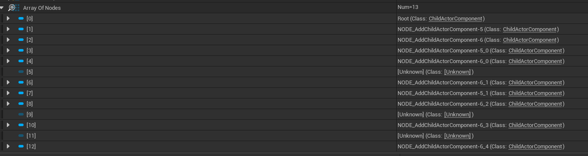

This project aim is to create an autobattler prototype system, with item equipping, turn based combat, and an overall progression map that is used to go between the battles.
For the project i want to make use of a different sort of layout/ architecture of the parts of the project than i am used to, where i would normally use a object oriented design to structure the project, i want to use a more data oriented structure. Other than gaining experience creating and designing a system that uses a different sort of methodology than have before, using a data oriented approach seems a better way getting through the turn based and stats based combat of the game. Using managers and passing data and events between them to complete the battle and ui logic means its all centralised in one place makes using turn based more easy as its all in one manager rather than spread out between different places.
I also want to have alot of the parts be dynamic in their creation, where rather than all manually made / assigned by me specifically, i want the set up and generation of the map especially to be create in a script, with limited interaction.
I think the one of the more difficult things will be making the map in an good way, as there are many possible ways of having the map tree, and having not done something like that before, figuring out the way to do it may be hard so some trial and error may be needed.
As the project goes on, being able to go back through and fix things within the managers may cause issues, as things could become to entangled with each other, so changing or adding things may become somewhat problematic. Hopefully i can keep ontop of it, or atleast make use of events and functions to seperate out the logic to avoid.
Figure 1. Diagram of Thing, fthis explain a particular concept and I can write all day here and it does not go towards my word count.
"The key characteristic of RT systems is that all, or almost all, of the gameplay takes place in real-time."

"combatants act in turns, usually one at a time. Other combatants are typically unable
to move or perform actions outside of their own turn"

From the evaluation made by this paper, using infomation gathered from forum posts to generate overall opinions on the strengths and weaknesses of the different battle styles. Real time seems to point towards single character, intense action and being problematic having multiple party members. Also as there is no direct control while the combat is going, having real time actions do not make sense. Real time with pause is a possible idea, as it allows party management and tactical depth. However it also does not really gain from being real time with the features planned. Turn based does have some issues with it being possibly boring or tedious due to the same animations being played over and over. Also some turn based games can be predictable if there is an obivious un-changing order to the combat. With (Mäkelä and Schmidt, 2020)
Mäkelä, V. and Schmidt, A. (2020) 'I Don’t Care as Long as It’s Good: Player Preferences for Real-Time and Turn-Based Combat Systems in Computer RPGs' In: Proceedings of the Annual Symposium on Computer-Human Interaction in Play. CHI PLAY ’20: The Annual Symposium on Computer-Human Interaction in Play. Virtual Event Canada: ACM. pp.231–240. At: https://dl.acm.org/doi/10.1145/3410404.3414248 (Accessed 17/02/2025).
Big part was UI and not knowing what the attack value was.


From the questionaire, the main consensus is selecting the item first, and then the character wanting to be equipped. Dragging the item is also a popular way of equipping the items, and it gives a good visual of actually 'equipping' the items. This will help with the confusion felt by the testers on, what order they need to click things and what characters are being equipped. Having effects and visuals will help show whats going on a provide a feedback effect to the player on what they're doing. The super auto pet; shop and item drag mechanic, creates a clear and easy to tell way of selecting an item, and then showing the selecting of the character to add the item to. The item having clear details on what it does and how much it is.

The clear details on what things do really makes it easier to play smoothly in Super Auto Pet's. Form the feedback, knowing what is equipped and how that is affecting the character, as well as seeing the stat values of the characters easily is something that is important.
Created structure diagram of the program to better see what each part did, and to easier build from it.
Adding way to see what character is selected. When selecting a character it will now show what character has been selected. creating a sphere to show selcected as a place holder for a better looking effect. It starts invisible and an event dispatch triggers an event in the selected hero that makes it visible, until the next selection of a hero where it sets it back to invisible.
To make it clearer i want an aura or some visual signifyier that its been selected. Also an outline when hovering the characters to show its selectable.
Creating the map/ progression
using a data table to create bounds, with a difficulty number to use to generate enemies for levels of encounter. I will then create a map, and populate each node with a different enemy encounter. Using a function library to read the rows, and then functions with the map actor to get those ranges and get the random numbers. However using random numbers, to create a runtime, random in future layout, i will have to change how my previous enemy loading works as from what i could see online, data tables cannot be edited during runtime, so i cant then save my create enemies into a data table to be read easily with my current system. Apparently there are packages on the store that enable this, but im not sure how worth it would be to use this, rather than just re do it, which could probably help with readability and make it more efficient.
https://www.fab.com/listings/5c77947a-5096-438f-91fb-a28729a34b57 Possible? https://forums.unrealengine.com/t/load-csv-data-table-in-runtime-builds/414548/4 https://blueprintue.com/blueprint/8zkq31hh/ https://forums.unrealengine.com/t/set-data-table-row/85844/7
Redoing the enemy set up, to use the created enemies rather than the set enemy data in the table.
because i used a function library, it means as long as i handle the inputs in the same way, i can just change the function to fit with the new array, and there isnt alot of logic to change.
While realising i may need to redo some parts which is fine, upon reflection on the project, I felt a bit lost on the steps i need to take to make the game better/ good, from what i currently have. I want to properly go through and break down the steps i need to take to make the parts, so i can more easily work on it. I do have a concern that alot of the games like this, where you have roguelike progression and battles like i want, have good artstyles that make it fun or gimicky, and as i dont have the best art ability, my mechanics will not fill the gap with the current plan. After talking through it i realised i did not have as big an issue than i thought i did. Also that using an array to store the enemies is a correct idea, as it works similar to a hash table being used to save a row of a large data table in a game that would need it. And it shouldn't be that difficult to change what i have to work with an array of structs rather than the structs from a data table.
As the map will have a different camera, i will need to have it move from the main view to the map view. This will go into the menuManager, it will need to happen at the start of the game, and then back to the map view after a fight has happened.
Thought that the text would look strange if not pointing at the player camera. So i want to add a material for the text that will point to the camera. I will have to test to see if it does give a better view than flat text. https://forums.unrealengine.com/t/tetx-billboard/274961/2 (Tetx billboard? - Programming & Scripting / Blueprint, 2022) Tetx billboard? - Programming & Scripting / Blueprint (2022) At: https://forums.unrealengine.com/t/tetx-billboard/274961 (Accessed 24/03/2025).
Add a variable to store the location above the nodes for the player icon to move to. Added Enter Input, but it would not trigger in runtime. I then realised i had not been using the correct left click line trace, and the debug message i had been using was from a different left click. and had been using on clicked instead of left click.
Im trying to get the clicked on node, and save it. But i feel like i have overcomplicated it by using child actors on one actor, as im struggling to find the way to select the correct node to have the move to.
To test whether i could have indiivudal nodes do things and it wasnt some strange issue, i added a on mouse overlap event to test if that worked for the node. I had to change the visibilty and collision of the node to make it work.

I couldn't get it to save the correct location and BP node. So im attempting to use event dispatchers. Although having multiple of the same actor that could dispatch the same event makes it difficult to figure out how to set it properly.
Perhaps using a interface could help with it.
Upon using a interface that takes the input from the node when its clicked, which is sent to BP_Map and used in a lerp mover that would move between the different nodes smoothly. EventBeginPlay BP_MusicManager ActorComponent TMap
The Node selected event is an interface event which is called when a node's actoronclicked event is called and inputs the node's "location above" to lerp to the player icon to the clicked node. Using the interface makes it easier to connect mutltiple of the same node logic to logic on the map. An event dispatcher or other methods might have worked to do the same thing, but this was the simpler way to do it without extra steps.
Now i need to populate the nodes, and have it load the encounter that has been generated. The BP_nodes were child actor components and they wouldn't cast into the array as BP_Nodes. Found on this webstie https://forums.unrealengine.com/t/blueprint-does-not-inherit-from-child-actor-component-cast-to-would-always-fail/555398 That i need to use "Get Child actor".
]
With this part a good start, i now need to make sure it loads the encounter properly and the previous stuff still works. One thing with using a left click event in the map, makes the other left click not work. https://www.reddit.com/r/unrealengine/comments/1eh17iv/if_i_want_the_left_mouse_click_to_do_multiple/ This website suggets using Input mapping contexts. Which looks to be the more up to date version of using inputs. If there was alot more specific inputting going forwards, or alot more 'sections' that it could be used for, redoing the input doesnt seem worth for what it fixes. Instead im going to use checks and either interfaces or event dispatches, and depending on what menu is up, do a specific action. After further investigation, i realised, as i was using an onclicked, i did not need the other left click events. And thus not needing any extra checks.
I want to store a reference to the map from the battle manager, so it can more easily access the array with the enemy info. The battle logic was not working correctly and after going through parts and figuring out where the logic path stopped, i realised that as the map view was now the starting palyer pawn, rather than the mainview. To fix this i will make it instance editable, and set it specifically in the editor, as there are only one instance of each.
Now i need to have it so it will go back to the selection screen after a battle has happened. And then have the selection be counted.
 Using this as a plan for how to get the different actors to look through.
I created a outline of the logic in my Constructing the tree function. It got all actors of class, and saved it in an array. It removes itself from the array incase that could cause an issue. It then goes through each one and gets the location of the indexed and the position of self, and removes it if it has a lower Y value. Turns out the ones behind are actually higher Y values so i needed to swap that around.
Using this as a plan for how to get the different actors to look through.
I created a outline of the logic in my Constructing the tree function. It got all actors of class, and saved it in an array. It removes itself from the array incase that could cause an issue. It then goes through each one and gets the location of the indexed and the position of self, and removes it if it has a lower Y value. Turns out the ones behind are actually higher Y values so i needed to swap that around.
 I then need to get a left and right actor, using the same methods of comparing each one, however using the new array gained from removing behind ones. I also foresaw an issue where the if a node didnt have a right or left it would cause an error. I add an isvalid check for changing the materials.
I then need to get a left and right actor, using the same methods of comparing each one, however using the new array gained from removing behind ones. I also foresaw an issue where the if a node didnt have a right or left it would cause an error. I add an isvalid check for changing the materials.
It wasnt working completely. One of the logics in the comparisons were probably wrong, to go through it systematically i will change round less than/greater than to see what it affects.
One thing i had forgot, that could be causing issues, is that the Nodes are all child actors on the Map actor, so using actual location may not be the best thing to do. From querying this to chatGPT, it seems that using the parent actor to do all the logic is a better thign to do, as it will use the correct locations. This means i will have to change it to getting get all components rather than actors.
This is what it looks did look like, but from what ive queried to ChatGPT about the best way of doing it, theres an easier way of finding it, as well as better doing it within the map rather than the nodes themselves.
Found out that the dead event would trigger before the game, because the enemies health check would trigger before the enemies stats would be allocated, so putting it at the start of the set up list makes it work. Begs the question on what parts of the set up on the battle manager is worth it being on begin play compared to having more set up actions be in the construct script instead. This actually didn't fix anything, just meant it would try and trigger before
Scan current pos, make possible ones children.
Viewing each encounter as a 'tile' within the context of a WFC. Using my preexisting data table of different difficulty encounters, i can use them to create each node within the wfc. This involves using a for loop to create child actor components. Because im using child actor, i need to use the get child actor. https://forums.unrealengine.com/t/blueprint-does-not-inherit-from-child-actor-component-cast-to-would-always-fail/555398. After generating a node, it will need to be put into an array. The left and right nodes are set in the current node. And the new ones are put into an array. Determining what needs to be class specific and what doesn't is a bit confusing, as i going back and forth how its going depending on what is needed where.
This spawns 2 nodes.
 It works in the viewport, but when looking in the map, it does not work correctly. I think its probably to do with the relative/ locations used.

I think it had something to do with using a copy of the array, so using referneces to an object may not have worked. Or that using relative location doesn't work because the new nodes aren't being added to the map properly to use that relative location. Turns out changing the 'Add Child Actor Component' location settings to being world location and then using the world location of the current node makes it work fine.
 A frustrating fix, as it's way less complicated than what i was trying to do. Now i need to make sure they dont overlap, or that they are seperate directions.
To fix the overlapping problem, i can either add a spacing amount that scales with which level/ depth the node is on. Or i stop the spawning, and have the different sections connect. One way of checking whether a node can be added would be to to create a map that stores the locations of the nodes, and if the position trying to be spawned is in the map it will prevent it from spawning,
https://www.youtube.com/watch?v=3mHjybsLhc0
This uses a map of BP_nodes that use a vector as a key. The nodes location is saved as the vector, so the location can be searched against. If there is no node at the location it is created as before. But if there is a node at that location, a new one is not created, and that node is set as that current nodes left or right node.
Next fixing so you cant click a node that isn't availiable, probably by checking whether a clicked node is left or right node of a current one.
this checks whether the clicked node is one of the currently clicked node's saved left and right nodes. This also brought to my attention that the indicators did not work for the first node as it did not do it set up until one had been clicked. This is fixed by having it run once at beginplay.
Next is to reattach the difficulties to the nodes and have them show what difficulty they have.
The previous populate and nodenums functions to set up the difficulties and make the nodes display them. At the moment the a seperate array of event is kept to be assigned, because the way the nodes were going to be when i made that are not like that anymore. Instead, ill have each node have a depth value when they generate, and then determining on the depth value, the chance of the difficulty being selected will be differnet. When a node is created, the current node is set as the parent node, only when a new one is created, to avoid overwriting. To make generating the events, having 4 functions in a function library, means that i can then use a switch to select one of those functions. To make it more random what difficutly is, the difficulty will either be the same as the previous node, or one more than the previous.
Because when a node is prevented from spawning if theres a node in the same place, the array of nodes array has gaps in it.  Either those gaps need to be removed or skipped over when getting to it. easily fixed by using isvalid and only proceeding when it is.
https://www.youtube.com/watch?v=ZFA3uCg_Peg
Some of the nodes were not showing their difficulty, the last row, while i wasn't sure the exact reason, the stats for those nodes being run on the begin play nodes, seemingly werent running. So instead i put the logic in its own event, and then in the BP_Map, going through each one and triggering it.
Sorted camera, level loads, win needs to send to to map and then choose and then next battle.
Choosing next level after battle.
Boss At the end of the
Added boss statsattach boss to end nodes. To make it semi automatic, goes through the array to find the highest number depth(being the last row). And for every node with that depth, sets the left and right node to being the boss node.
Not clear what order to equip in, some click the item before selecting the hero to equip. Not clear what is health or attack
When going between rounds the hero selected stays, so if you press a button it 'equips' even when one shouldn't be
Player was unsure on how the order / distance of each of the characters are significant or work. Some sort of explaination of it being random could be good. They also beat the boss and there was no screen to retry or end, as i had forgotten to add one for that scenario while i was doing the losing one. Some sort of visual indicator of damage taken was requested as if theres no deaths its somewhat hard to tell what has happened.
If the tester was fast enough they could click on a multiple nodes and skip, but non valid nodes could still not be clicked.
I've made use of a range of research, whether it be from academic, games and documentation. I used academic sources to affect some decisions in related to the underlying game, being the decision to use turn based for the game as apposed to live battling. By looking at games like super auto pets and other turn based battlers, it helped decide how the turns would laid out, where the option of one after the other, or the front ones at the same time. This game having the enemies be one big one rather than multiple small enemies, having the game be one after the other fits better. I think perhaps having a better idea around the underlying layout of the games i took interest in, such as peggle for its map, or super auto pets for the item equipping, may have let me have a better idea of how they were made and why they were done like that to either change the way i made it or make it easier in my implementation.
I think deciding to use a map reference to create the nodes